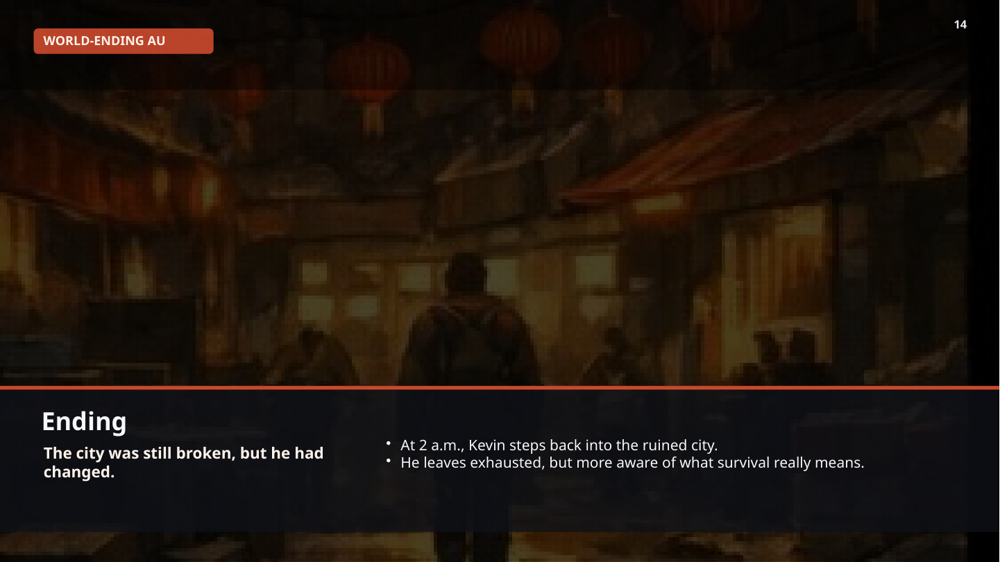

THE ABSOLUTE LIMIT
END OF THE WORLD
A grounded apocalyptic narrative centered on Kevin, a 19-year-old university student who is thrown into a relief station where pressure, scarcity and fear constantly threaten to overwhelm him.
From normal student to exhausted survivor.
Kevin begins as a shy, slightly clumsy student carrying books from the life that no longer exists. In a city with unstable power, food scarcity and abandoned businesses, the relief station becomes one of the few places still operating—and Kevin works there for ration credits and to support the shelter zone.
STORY TIMELINE
The slide deck naturally works as a website timeline, so the page turns your original sequence into readable beats.
The city is dark, hungry and unstable. The relief station becomes one of the last functioning civic spaces.
Requests flood in faster than the team can answer. Kevin keeps switching between counter, water, emergency meals and supplies.
Scarcity turns waiting into anger. Every mistake feels dangerous. A wrong package or missing bag can ignite panic.
Noise, heat, alarms, fear and crowd pressure crash together. Kevin nearly breaks under accumulated stress.
In a quieter corridor, he admits he cannot carry everything alone. The manager reframes the chaos with honesty and empathy.
A clearer role gives Kevin focus. He returns to help stabilize the station with less panic and more purpose.
THEMES
This page is strongest when treated as an emotional realism story, not just a disaster scene list.
Pressure
Survival is presented as labor, noise, miscommunication and relentless responsibility rather than cinematic heroism.
Empathy
The red packet blessing and the manager’s conversation prove that kindness still matters inside collapse.
Growth
The city remains broken, but Kevin is no longer frozen. He leaves with a deeper understanding of survival and community.
VISUAL ARCHIVE
These slide captures can stay as your initial media set until you replace them with custom artwork later.

